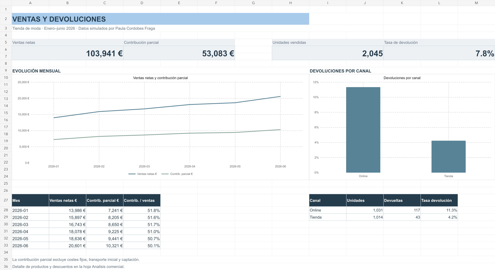

LVMH · INSIDE LVMH CERTIFICATE
Creation & Branding.
Retail & Customer Experience.
Formación centrada en creación y construcción de marca, retail y experiencia de cliente en el sector del lujo.
COMERCIO · MARCA · RETAIL
Formación comercial.
Perspectiva internacional.
Estudiante de Comercio en la Universidad Complutense de Madrid, con formación en Business Administration en TU Dublin y certificaciones en branding, experiencia de cliente y emprendimiento.
Formación complementaria para entender el negocio desde la marca, el cliente y las herramientas de trabajo.
LVMH · INSIDE LVMH CERTIFICATE
Formación centrada en creación y construcción de marca, retail y experiencia de cliente en el sector del lujo.
CÁMARA DE COMERCIO DE ESPAÑA
Diploma de aprovechamiento y formación en desarrollo del emprendimiento y espíritu empresarial.
HUBSPOT ACADEMY
Certificación en metodología inbound, como complemento a la formación comercial y la orientación al cliente.
Octubre 2025 · Vigente hasta noviembre 2027SANTANDER OPEN ACADEMY
Formación en Microsoft Excel para reforzar la base de herramientas de trabajo en entornos de negocio.
Noviembre 2025Formación complementaria en competencias digitales para el entorno profesional.
Octubre 2025Áreas de formación que definen mi enfoque comercial.
Una base formativa que une creación de marca, retail y experiencia de cliente.
Estudios de Comercio y Business Administration, complementados con formación emprendedora.
Certificación en Excel y competencias digitales. Inglés con competencia básica profesional.
Universidad Complutense de Madrid
En curso · Finalización prevista en mayo de 2027Technological University Dublin
Formación internacional en el ámbito de la gestión empresarialInglés · Universidad Complutense de Madrid · Diciembre 2023
Curso adicional: SixManagement AcademyMICROSOFT EXCEL · ANÁLISIS COMERCIAL · RETAIL
¿Cómo comparar las ventas, los descuentos y las devoluciones antes de decidir una promoción? Este caso práctico analiza 1.500 pedidos simulados de una tienda de moda. Un libro de Excel conecta los datos con el análisis por producto y canal y calcula cuánto habría que vender con descuento para mantener la contribución.
Excel con cuatro hojas, siete gráficos vinculados a celdas, cinco tablas con filtros y un simulador de promociones. Complementado con un panel interactivo y un plan de experiencia de cliente a 30, 60 y 90 días.

EL PROCESO
Proyecto independiente con datos simulados de enero a junio de 2026. Relacionado con la formación en Excel de Santander Open Academy y las áreas de Retail & Customer Experience de INSIDE LVMH. La contribución es parcial y el simulador calcula un umbral contable, no una previsión de demanda.
COMERCIO CON UNA MIRADA ABIERTA
Comercio, retail, marca y experiencia de cliente: las áreas en las que quiero desarrollar mi trayectoria profesional.